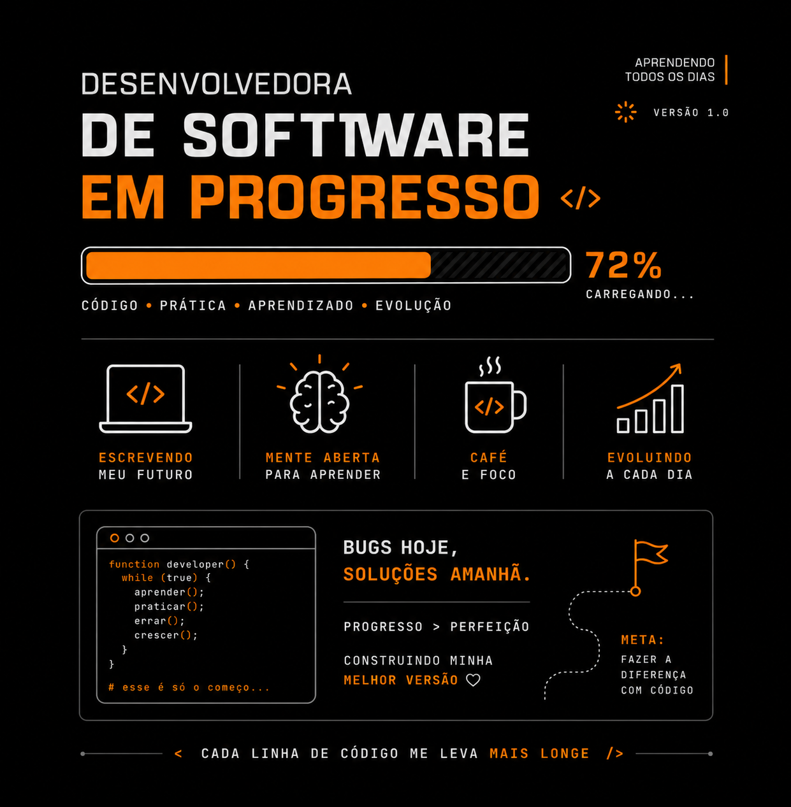

Olá, seja muito bem-vindo ao meu universo
Sou Jaqueline Medeiros, graduanda em Desenvolvimento de Software Multiplataforma na FATEC-Jacareí.
Aqui você irá conhecer um pouco sobre minha história e encontrará informações sobre meus projetos, habilidades e experiências na área de tecnologia.

Sobre mim
Sou estudante de Desenvolvimento de Software Multiplataforma na FATEC-Jacareí.
Estou em processo de transição de carreira da área de confecção têxtil para a área de tecnologia.
Sempre tive interesse em entender como os processos funcionam e em buscar soluções para problemas reais. Ao iniciar minha jornada na programação, encontrei na tecnologia uma área que une aprendizado, criatividade e resolução de problemas. Atualmente estou no segundo semestre do curso e busco minha primeira oportunidade profissional na área de tecnologia, onde possa continuar desenvolvendo minhas habilidades e contribuindo para novos projetos.
Meus projetos
Sobre meus projetos
SCRUM do Zero
Portal desenvolvido para testar conhecimentos sobre a metodologia ágil Scrum, realizado como projeto de Aprendizagem Baseada em Projetos (ABP).
Minha contribuição
Atuei na documentação das funcionalidades e dos elementos das telas, criação do fluxo de navegação entre as telas e desenvolvimento de funcionalidades do backend relacionadas ao controle das questões, progresso e certificados.
Também desenvolvi consultas de exames já respondidos, integração dos dados de progresso entre frontend e backend, cálculo da média final do usuário, funcionalidade de logout, refatoração da estrutura do projeto e correção de bugs e inconsistências finais.
Tecnologias utilizadas
HTML, CSS, JavaScript, Node.js, Express e PostgreSQL.
Semestre:1º semestre
Ver repositórioConsulta de concursos da Mega-Sena
Aplicação desenvolvida para consultar informações dos concursos da Mega-Sena a partir de uma base de dados armazenada em PostgreSQL.
Minha contribuição
Realizei a construção completa da aplicação, desde a estrutura da interface até a implementação das funcionalidades de consulta e integração com o banco de dados.
Tecnologias utilizadas
HTML, CSS, JavaScript, Node.js, Express e PostgreSQL.
Semestre: 1º semestre
Ver repositórioContato
Você pode conhecer mais sobre meus projetos através do meu GitHub.